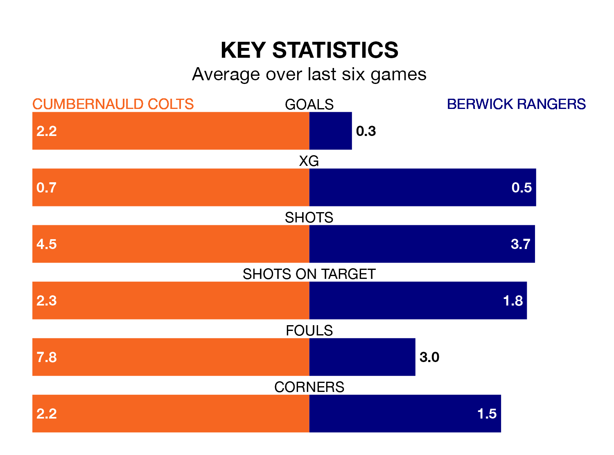

Berwick Rangers travel to the Broadwood Stadium for Saturday's match against Cumbernauld Colts looking to bounce back from defeat last time out in Highland and Lowland Football Leagues.
Berwick, who sit zero in the league after 17 games, fell to a 1-0 away defeat to Civil Service Strollers on November 11.
They face a Cumbernauld Colts side who picked up a win in their last match, a 2-0 victory against Edusport Academy, and who sit third in the table.
Cumbernauld Colts are in good form in Highland and Lowland Football Leagues, with four wins and a draw from their last six games.
With no wins and a draw over that period, Berwick's form is much worse – they have taken one point from 18, compared to Colts's 13.
With 16 goals in 17 games so far this season, Rangers are the league's joint--13th-lowest scorers with 0.9 goals per game. But they are conceding fewer than average too, letting in 24 goals at a rate of 1.4 per game.
The home side, meanwhile, are above average scorers, with 2.1 goals per game, compared to a league average of 1.7. They have conceded 1.1 goals per game.
In the last three years, Cumbernauld Colts and Berwick have played each other on six occasions. Cumbernauld Colts won two of them, Berwick three, and they drew once.
On average, Colts scored 0.8 goals and Berwick 1.7 in those matches.
Their last meeting was on July 29, when they played out a 0-0 draw.
